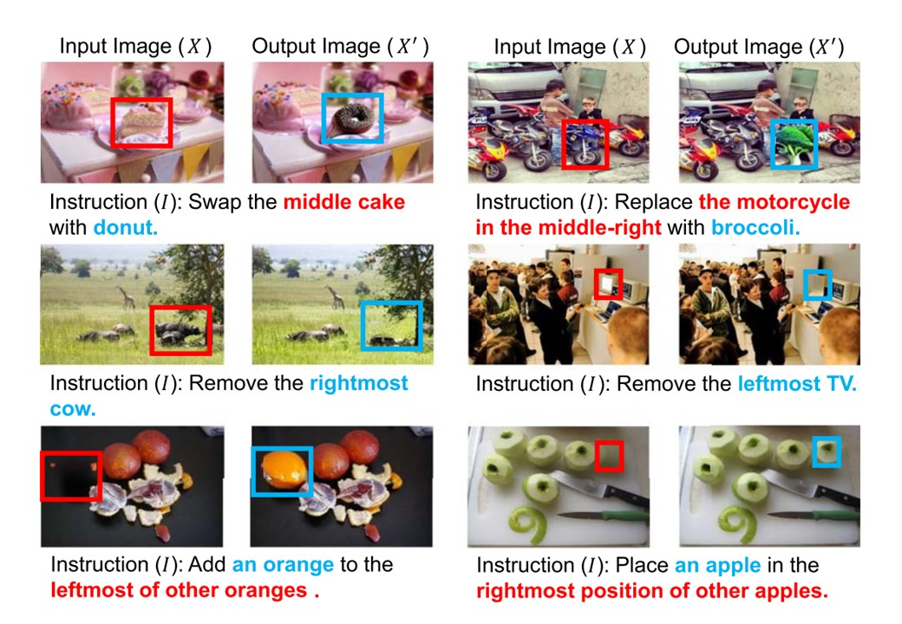
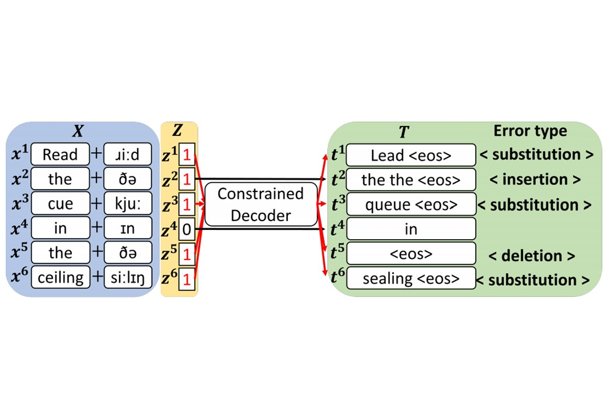

System-based outcome evaluation and causality-based behavior assessment for model robustness and explainability
Knowledge-enhanced generation techniques and foundation model development
Multimodal large language models and their applications
Towards Fully-Automated Materials Discovery via Large-Scale Synthesis Dataset and Expert-Level LLM-as-a-Judge
CIKM 2025
Overcoming Source Object Grounding for Semantic Image Editing
TACL 2025
Interventional Speech Noise Injection for ASR Generalizable Spoken Language Understanding
EMNLP 2024
Welcome to the new Data Intelligence Lab homepage.
Towards Fully-Automated Materials Discovery via Large-Scale Synthesis Dataset and Expert-Level LLM-as-a-Judge
Rethinking the Training Paradigm of Discrete Token-Based Multimodal LLMs: An Analysis of Text-Centric Bias
Overcoming Source Object Grounding for Semantic Image Editing